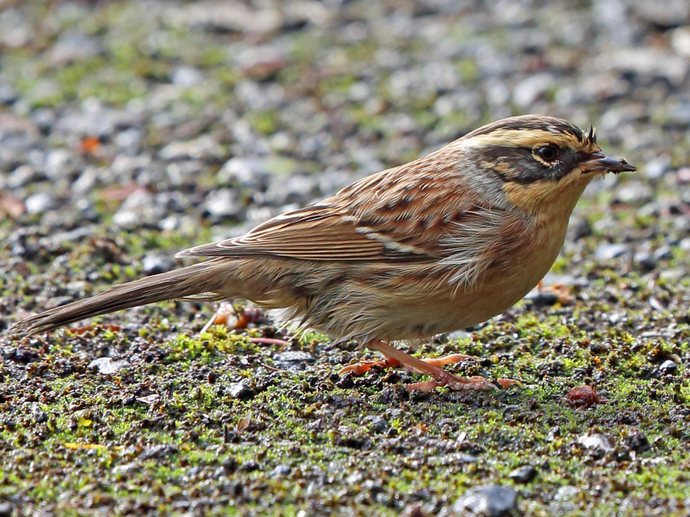

In males of the nominate race, the crown is grey-brown with a black border, contrasting with the long
supercilium yellow-cream. The ear-coverts are blackish with some buff on the upper part.
posterior. Neck sides are grey. The mantle, back and wings are brown, the mantle with some
bright chestnut streaks. Rump and tail are grey-brown. The whitish ends of
middle and greater coverts form 2 narrow wingbars which are only really visible at very low
distance.
Size : 14 cm
Order : Passeriformes
Family : Prunellidae
Genus : Prunela
Species : montanella
Montanelle accentors sing from the top of a bush or tree, they emit notes
melodious and quite powerful, reminiscent of those of shambling accentors. There are two types of singing:
the first is really close to that of the Accenteur Mouchet and the other is more buzzy. The cry of
contact is a trisyllabic "dididi".